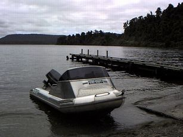

釣行日誌 ＮＺ編 「その後で」
ストーキング、静水にて
1999/12/16(THU)-2
はるばるホキティカから５時間近く走り、峠を越えた後にようやく最初の湖に到着した。道路沿いの広場から、きちんと整備されたランプではないのだが、なんとかボートを湖面まで降ろせるだけの傾斜路が整えられている。
まずはウェーダーと靴を履き、釣りの支度を整える。靴を履いているとさっそくサンドフライが現れて手の甲などに噛みつき始める。まだ圧倒的多数による攻撃ではないのだが、噛み跡がいつまでも痛痒く残るので、かねてから用意してきた手製の防虫ネットを被る。両手にはコンビニエンスストアで冬になると売っている薄いナイロンの手袋をはめる。これでサンドフライ対策は完璧である。
ロッドを組み立てフライを結び、昼食と水筒などが入ったコンテナを積んでいよいよボートが湖面に浮かぶ。いくぶん濁りの入った湖水はかなり冷たい。船外機を始動させいよいよ出発である。

最初はボトボトと方向を変えていたブリントが
「しっかり掴まっていろよ」
と言ってからスロットルを開けると、40馬力のヤマハがキウィ・クラフト製のアルミボートを湖上へと蹴り出してゆく。こんなにスピードが出るとは思わなかったのであわてて帽子を被り直し、顎ヒモを締める。少しだけ風があるものの、曇り空、時々晴れ間の天気は湖の釣りにはもってこいである。
まずは入り江を目指そうということで、流れは細いが地図で見る限り唯一の流れ込みに舳先を向ける。入り江は細かな砂利と砂で大きな三角州ができており、上流の渓相はいくぶん平坦なようである。ザンザラの河床では鱒が居そうにもないので、ボートを係留してからブリントと上流を目指して遡行を始める。五百メートルほど歩いて偵察したのだが、こりゃ見込みが薄いな.....ということで引き返す。
「一昨年、グレースと来たときにはこのあたりは良い淵が続いていたんだけどなぁ。大水で川が変わっちゃったよ」
それでは湖の入り江から岸沿いを攻めましょうということで、広い砂地をてくてくと歩いて戻ってゆく。すると、ランプから一艘のボートがこちらを目指してやってくるのが見えた。
「やや？ ありゃ釣り人か？ だとするとオモシロクないな...」
ブリントの懸念ははずれ、かの船上の人はどうやらポッサム撃ちの猟師らしく、入り江のはずれに船を留めると、ずいずいと藪の中に消えていった。
ポッサムとは、正式にはオポッサムといい、タヌキよりも二まわりぐらい小さな哺乳類である。顔は可愛らしいのだが1800年代に移入されて以来、森林域で異常に繁殖し、近年では在来の生態系を乱すということで害獣に指定され大々的に駆除作戦が展開されているのである。最近ではある毛皮会社がポッサムの毛皮とウールとを混紡して新しい毛皮製品を開発したとかで、日本にも輸出されているそうである。夜行性なので、夜歩きの際に道路上で車に轢かれることも多く、南島西海岸の道路を朝方に走るとポッサムの死骸が数百メートルおきに累々と連なっているのである。
「ここから向こうに見える崖の辺りまで静かに釣って行けよ、魚はいるから。俺は錨を上げてから船を引っ張って後を追うから」
ブリントはそう言うと、船の方へと歩み去った。
さて。 湖のサイトフィッシングである。正直言って自信が無い。
釣り人・写真家としても有名なレス・ヒル氏の名著「ストーキング・スティルウォーターズ」をバーゲンで安く買ってちらちらと読んだのだが、そこで述べられている膨大な経験と観察の集大成から学んだことと言えば、
○静水の鱒は餌を求めてあちらこちらと彷徨いつつ泳いでいるので、魚影を発見したら間髪を入れず「適当な」フライを「適切な」プレゼンテーションでキャストすること。
○魚影を求めて湖岸を歩行する際には、すぐにキャスティングが始められるよう、フライラインを２～３mほどティップから垂らしておくこと。
だけである。２番目の教えはすぐに実行できるのだが、１番目の教えを実行するにはいかにも技量が不足している。フライの選択についてはブリントの経験から蒸留されたラビットフライでまず間違いはないと思えるのだが、間髪を入れず「適切な」プレゼンテーションでキャストができるとはとても思えない。
まぁ、そう嘆いても始まらないので、とりあえずフライラインを垂らし、竿を持ったストーカーは静かに真夏の湖岸を入り江の奥目指して歩み始めるのであった。
なるほど。
確かに鱒はいた。水深30～50cmほどに残るかつての澪筋らしい深みの線上に、そう大きくはないが体調のよさそうなブラウントラウトがしきりと動いて餌をあさっている。砂地の湖底は青白く均一な色合いなので鱒の影はくっきりと見える。距離は15mほど。まぁ、一番キャストしやすい距離と言ってよいだろう。
ジーコジーコとラインをリールから手繰り出し、キャストを始める。ブリント直伝のノッテッド・リーダーには短めのティペット３Ｘの先に、あらかじめ湿らせたラビットが結んである。あまり何回もフォルスキャストを繰り返してはマズイので、最後のシュートがもくろみ通りの距離だけ伸びることを期待しつつフライを放つ。
「シュルシュルシュシュッ、 ぴちゃん......」
と、着水したフライは例の鱒から３ｍも右に逸れた。
『バガー......』 と、本日最初の溜息をもらしつつも、ストリーマーが沈んだのを見計らって砂底の湖底からフライを泳がせ始める。気づくかな？と思って注視していると、魚影はいきなり方向を変え、スイーッスイーッと引っ張って来るフライを目指して追ってくる。
『うーん、来た来た来たっ、もう少し、それっ 喰えっ！』
激しく鱒が身震いするのを見てからロッドを立てたのだが、なぜかフックに乗らず、慌てて反転した鱒は深みへと消えていった。
『･････････ なぜ？』
うーん、理由はわからなかったが合わせに失敗したようだ。ロッドに魚の感触が無かったところを見ると、底すれすれを引いてきたストリーマーめがけてアタックした鱒の姿に興奮して早く合わせてしまったようだ。ゴクンと当たりを感じてからしっかり合わせよう。
うーん、まだまだ鱒は居るはずだ。と気を取り直して次の魚影を探す。ブリントがボートを引っ張って静かにカケ上がりの近くを探しながら後についてくる。
『ははぁ....あそこか......』
見ると、入り江の奥に流木が沈んでおり、その根の辺りに水中の枝ではない別の色をした影が岸と平行に移動している。いそいそとラインを手繰り、２回目のキャストに入る。まずまずの位置に落ちたフライを鱒が見つけ、あまり興味がなさそうに後をついてくる。
「ちょっとパターンを変えてランダムに引いて見ろ！」
いつのまにか背後に来ていたブリントが鱒の様子を見て声を掛けてくれた。スイーッ、ピッピッ、シャッシャッシャッとラビットを泳がせたものの、目と鼻の先まで追ってきたブラウントラウトは水面上に人影を見ると、悠々と湖底へと戻ってゆく。
ブリントをして、
「この湖で釣りをしているやつを見たことはないなぁ...」
と言わせる辺境の湖でも、ブラウントラウトはなかなか気むずかしいようであった。
入り江のはずれまで忍び歩いてきたものの、それ以外の鱒を見つけることが出来ず、ボートに乗り込んで湖岸沿いを攻めて行くことにする。ブリントはオールを支持架に通してからアルミボートの中央に立ち、立ったまま器用に船を漕いでゆく。アメリカのマディソン川などでポピュラーなマッケンジータイプのボートとは異なり、進行方向を向いて立ったまま漕ぐのである。私は船外機のすぐそばに立ち、ブリントの頭を釣らないように注意しながらややサイド気味のキャストで湖岸の障害物の際を狙う。船としては後方に向けて進む格好になるのだが、オールでゆっくりと漕いでゆくには問題ないようである。
湖岸には至るところに沈木、大岩、藪などのいわゆるストラクチャーが展開し、いかにも大物ブラウントラウトの潜んでいそうな様相を呈している。湖水は澄んでいるのだが、湖底を見ると黒に近い茶色に静まっている。明るい砂地であれば魚影を確認することができるのだが、この障害物の数々と、急に深くなる湖底の形状では、鱒を見つけることが難しく、とりあえずのポイントを手当たり次第にボートの進むスピードに合わせて絨毯爆撃的にキャストして探っていくのがブリントの戦法らしい。
サイトフィッシングも面白いのだが、この状況ではこの方法が最も効率が良さそうであった。渓流と違って、定位して餌を捕食している鱒が少ない湖では、確かに一理あるな、と思う。
釣行日誌ＮＺ編 目次へ
サイトマップ
ホームへ
お問い合わせ